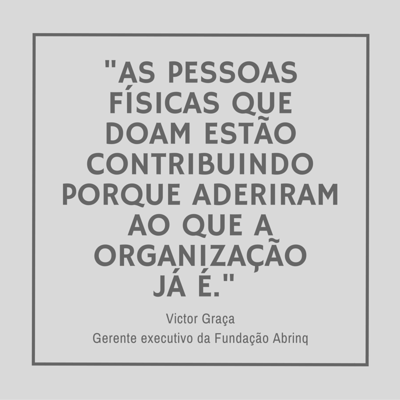
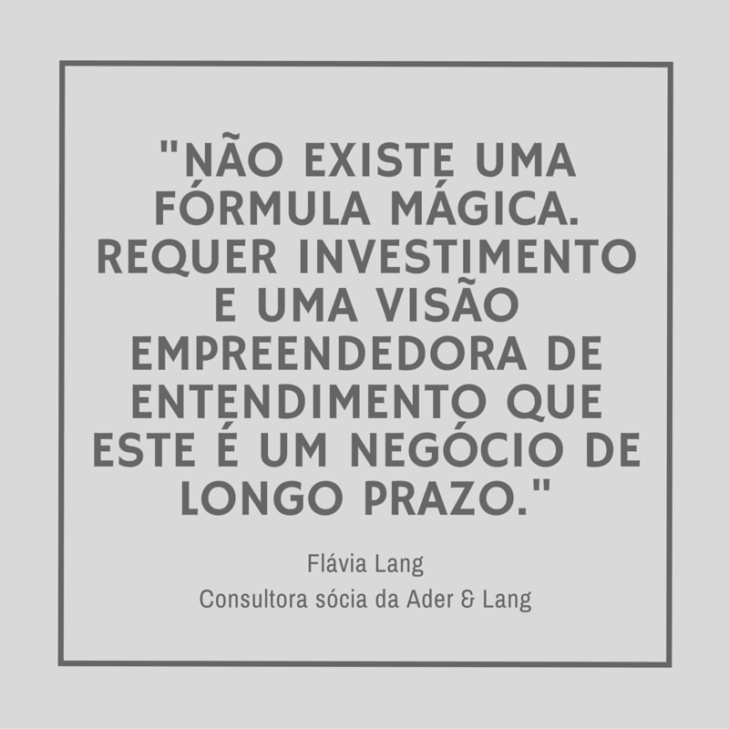

Diversificar a fonte de recursos da organização deixou de ser apenas uma orientação sobre sustentabilidade financeira para virar uma máxima. A captação de recursos com pessoas físicas tem ganhado cada vez mais adeptos e é uma escolha importante para a independência e crescimento da organização
Historicamente, a captação de recursos no Brasil tem mudado. Da dependência de uma verba internacional, as OSCs (organizações da sociedade civil) passaram a buscar o apoio de empresas e institutos para, há alguns anos, entenderem a importância e os benefícios de se investir no relacionamento e retorno de pessoas físicas. Uma pesquisa lançada este mês pelo IDIS* – Instituto para o Desenvolvimento do Investimento Social – revela que 30% da população brasileira é doadora recorrente.
Flávia Lang, consultora sócia da Ader & Lang trabalha já há 20 anos com este segmento da captação de recursos. Para ela: “contar com o apoio financeiro de pessoas físicas é parte da mobilização social para a causa da organização”, afinal, “uma das formas que a pessoa expressa que concorda com a causa e com a atuação da organização é através da doação.”.
Lang explica que quando OSCs constroem uma base de doadores individuais, desenvolvem legitimidade. “A causa deixa de ser só de uma pessoa [de quem trabalha na organização], e passa a ser de um grupo maior. Sou eu mais os meus milhares de apoiadores financeiros falando. Passa a ser mais do que o simples dinheiro, passa a ser o apoio por uma causa que eu acredito”.
Victor Graça, gerente executivo da Fundação Abrinq, concorda com Lang: 
“As pessoas físicas que doam estão contribuindo porque aderiram ao que a organização já é;
acreditam na causa em si e confiam no trabalho que está sendo executado”.
Na mesma pesquisa feita pelo IDIS é possível encontrar o número real de doações
feitas ao longo do ano de 2015: R$13,5 bilhões de reais – o que corresponde a 0,23% do PIB do país.
Segundo Lang, essa informação só comprova a existência de um potencial de mercado gigantesco à frente. Para tanto, ela acrescenta: “Muita gente diz que nós temos que estimular a cultura de doar.
Eu diria que temos que estimular a cultura de pedir.”
 O caminho, porém, é bastante diferente da captação feita com empresas ou recursos públicos e exige algo pouco praticado no Brasil: O investimento de recursos na própria captação de recursos. “Não existe uma fórmula mágica. Requer investimento e uma visão empreendedora de entendimento que este é um negócio de longo prazo. Também não podemos ter medo de errar. Ninguém nasceu pronto, já sabendo. Testar para ir aprendendo é a palavra-chave”, orienta Lang.
No que é preciso investir?
Dos 26 anos de atuação da Fundação Abrinq, apenas os últimos 5 foram dedicados à captação de recursos também com indivíduos e o resultado foi surpreendente: “Em 15 anos, nós passamos de 0 a 3 mil doadores, mas nos últimos cinco anos [desde a implementação do plano de captação de recursos com pessoas físicas] atingimos a marca dos 80 mil doadores”, compartilha Graça.
Ele conta que a Fundação já testou diferentes ferramentas, desde mala direta e abordagem face to face (contato pessoal) às mídias sociais. “Para o bem e o para o mal, as mídias sociais dão muito acesso para todo mundo. Como prezamos por transparência, para nós tem sido [uma ferramenta] muito boa. Antes, todo o contato [com os doadores] que era feito por correio, era bastante caro e demorava mais, agora ficou mais prático e rápido falarmos o que estamos fazendo”, explica.
As possibilidades de estratégia e o acesso às ferramentas têm se expandido cada vez – tanto para as grandes organizações, quanto para as menores. Por isso, é importante ter um plano de captação bem definido e ir testando as ações, acompanhando o retorno do público. O mais importante é jamais deixar de falar com os doadores, uma vez que, como Lang diz “é mais do que dinheiro, é um compromisso pessoal. Você vai trazer uma pessoa, ela vai doar e começar a participar ativamente da organização”.
Neste contexto é preciso prestar muita atenção em como estar próximo das pessoas que se identificam com a causa da organização. “As pessoas não gostam de fazer nada sozinhas e elas são mídias ambulantes, todos somos comunicadores. Precisamos trazê-las para compartilhar nossa visão de mundo, mas precisamos ouvi-las também. Nesse caminho as pessoas precisam ter a oportunidade de também fazer coisas. Ações de participação ativa, para realmente se sentirem parte”, destaca. Para ela, reconhecer a doação com um agradecimento e cuidar sempre da transparência são pontos fundamentais a se investir.
Dicas
Se a sua organização ainda não é do tamanho da Fundação Abrinq, que tem hoje 15 projetos e uma rede de 300 organizações parceiras atuando na linha de frente, Victor Graça tranquiliza: “Não tente começar fazendo o que uma organização grande faria. Comece pequeno. Coloque uma meta viável para o tamanho da organização e vá. Tente impactar o seu entorno primeiro, observe a curva de aprendizagem que vai surgir dessa experiência e, a partir disso, avance aos poucos”.
Flávia Lang tem um conselho valioso também: “Encontre primeiro o que você quer comunicar. Qual história você vai contar? Como você vai dizer quem é a sua organização?; e faça isso de um jeito que as pessoas entendam. [Com a história em mãos], você entra no elevador, conta para uma pessoa que você não conhece e se ela entender, você está no caminho certo. É fundamental traduzir uma linguagem mais técnica para uma linguagem que as pessoas entendam”.
*Acesse o material completo da Pesquisa Doação Brasil, feita pelo IDIS.
Por Ana Luíza Vastag, da Escola de Notícias